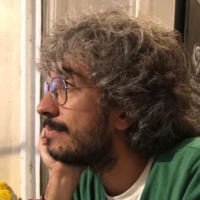
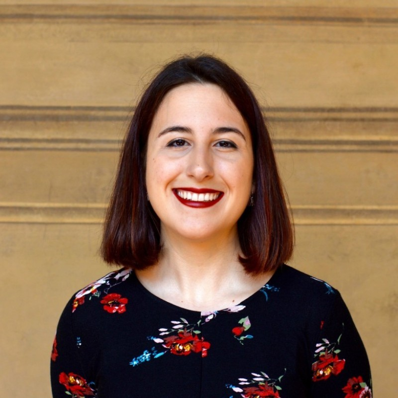
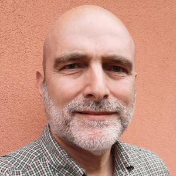
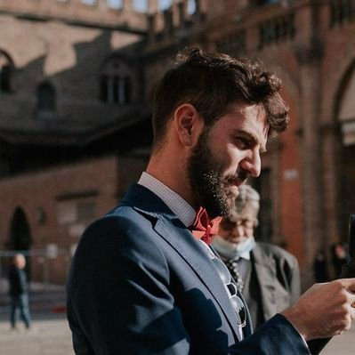

We invite researchers, scholarly publishers, funders, policy makers, institutions, and open‑citations advocates to the Workshop on Open Citations & Open Scholarly Metadata (WOOC) — a gathering for anyone interested in the widespread adoption of practices for creating, sharing, reusing and improving open scholarly metadata.




The University of Bologna is the oldest university in the western world, and one of the largest in Italy, with about 90,000 enrolled students. The workshop takes place at the University of Bologna, in the heart of the city, across two venues.
Via Zamboni, 32 (first floor) — Bologna, BO — 40126 Italy
Open an issue on GitHub.